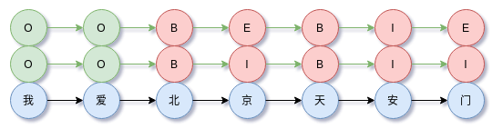
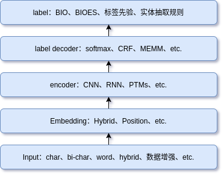
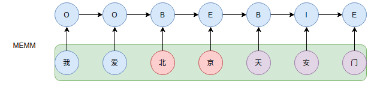
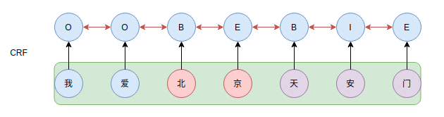
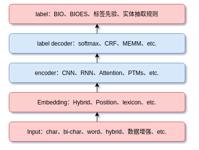

NER任务的深度总结
总结一下NER任务，包括思路分解、标签集说明、评估指标、编码器、解码方式等等。
NER是信息抽取（IE）中最常见的任务甚至可以说是核心任务，直观上可以理解为“基于实体的中文分词”，在过去的文章NLP任务：序列标注、序列标注：从HMM、MEMM到CRF中已经介绍过序列标注任务，该任务包括三个常见的子任务：
- 分词（中文分词，CWS）可参看旧文中文分词详解：从传统方法到深度学习方法
- 命名实体识别（NER），HMM解决NER任务可参看序列标注之NER、CWS经典模型HMM实现
- 词性标注（POS），关注词在词法上的类型和行为规则
其中NER任务是序列标注中应用价值最大的任务。这方面的内容在过去的文章中都有介绍和简单的展开，但是不系统。今天在这篇文章中详细总结NER的相关内容，涵盖NER现状、标注集、评估指标、解码、编码、特征融合、数据增强、工程落地等等内容。
NER及其难点
命名实体识别，简称 NER（Named Entity Recognition），是 NLP 序列标注中常见的任务。NER 作为基础工具可以用于信息提取、问答系统、句法分析、机器翻译等任务。
实体：实体（entity）是一个概念（concept）的实例。可以类比思考，就像一个类（class）至于实例（instance）。比如说，编程语言是一个概念，即一个实体类型，那么 Python 则是实体。有比如，人物是一个实体类型，那么 Geoffrey Hinton 则是实体。一个句子中常见的实体包括⼈名、地名、机构名、专有名词（如股票名称、术语等）等等。
常见的实体类型如下：
- 人名
- 地名，如城市名、国家名称等
- 组织机构名
- 时间，如日期、时刻、时段
- 数字表达，如百分比、股价等
实体识别：实体识别要做的事情是，给定一句子（词序列），识别其中的实体类型。
NER
NER任务的目标是从给定的文本中抽取出实体部分，并对该部分进行实体类型分类。因此，NER实际上同时完成两件事情：
- 实体抽取
- 实体类型的识别
所谓序列标注就是，在给定某一个随机序列的情况下，求另一个随机序列的概率分布的概率图模型
$x$为句子序列，$y$为标注序列。$\arg\max$ 对应解码过程，若是序列，需要使用动态规划算法，若是分类，则使用穷举法即可。NER作为序列标注的示意图，

上图输入$x = \text{我爱北京天安门}$，在BIO标签集下，输出为$y = \text{OOBIBII}$；在BIOES标签集下输出为$y = \text{OOBEBIE}$。
其他序列标注任务有：
- 中文分词，cws
- 命名实体识别，ner
- 词性标注，pos
- 语义角色标注， srl
难点
NER难点在于实体的多样性、歧义、实体的复杂性、监督数据的缺失、同中文非常一样的边界难确定问题。总的来说，NER的难点大致归为三大类：
- 实体的多样性
- 实体的复杂性
- 歧义问题
- 边界难确定
- 监督数据的缺失
实体的多样性：现实生活中的实体非常丰富。即便是有限的实体集合，通过一定的规则组合（如拼接、嵌套、简并命名、多语言）也可以构造出更多的实体，如此递归下去，灵活构建的实体的数量近乎无穷。此外，即便是同一个实体，也面临类别模糊的情况，如中国长城可以指一个地方也可以指股票投资标的。
实体的复杂性：非连续性实体、嵌套实体、多语言实体。对于实体嵌套，如ABCD是一个实体，其中BC也是一个实体。
边界难确定：NER也常常面临对新词边界把我模糊的问题，这也是实体错分问题的常见来源。
歧义问题：如同分词一样，NER也面临歧义的问题。比如“乒乓球拍卖完了”，可以是“乒乓球/拍卖/完/了”，也可以是“乒乓球拍/卖/完/了”
监督数据的缺失：NER的监督数据非常缺失。从开源数据来看，中文NER带标注数据并不丰富。一方面是标注的数据量不大，另外一方面是标注的粒度不够细致。
有，一下实体或概念：北京紫禁城影业公司 赵朴初 全国人大环资委 四库文献中心 长沙市东区人武部 南非金巢文化事业有限公司，从模型的角度讲，这个任务都具有强模型所难的倾向，强迫模型学习人类社会中的依靠人脑想象力构建的对象。从小到具体的物件到大到像国家这样的抽象概念，你说哪一点不是强模型所难？
基本架构和思路分解
和分类、匹配任务一样，NER问题的解决流程也可以层次化分解，不同层次关注不同的部分，

自下而上具体可以分为：
- 输入层处理，包括数据增强、char、bi-char、字词混合等等
- Embedding层，包括如何融入词汇信息、如果融入更多特征
- 编码层，CNN、RNN、Transformer、预训练模型等等
- 标签解码层，常见有softmax、CRF、MEMM、RNN、指针网络
- 标签有关的处理，如使用的标签集、实体抽取规则
对于token-level的NER任务来说，重点应该在输入层处理、Embedding以及标签有关的处理，而不是encoder和label decoder。在深度学习之前，NER还有基于规则的方法（现在也很常用）、基于特征设计的机器学习方法，本文还是专注于讲深度学习中的NER。
标签集说明和对比
现阶段，解决NER问题最常见的方法是基于逐字标注。
不过需要注意，NER并不完全是序列标注，就像词典分词方法一样，NER也可以使用实体词典完成实体的识别。
BIO & BIOES & BMESO
BIO与BIOES是NER任务中最常用的标签集，有时候也会遇到BMESO，其实就是BIOES中I -> M
BIOES 释义如下：
| BIOES | 解释 |
|---|---|
| B | Begin，表示实体的开始 |
| O | Other（Outside），表示其他，用于实体无关字符 |
| E | End，表示实体的结尾 |
| S | Single，表示单个字符 |
| I（M） | Intermediate，表示中间，有时也使用median（M） |
一个例子：
小明 在 北京大学 的 燕园 看了 中国男篮 的一场比赛
PER ORG LOC ORG
BIO是BIOES的化简版本，把S转换为B，把E转换为I。为丰富标签信息，甚至可以扩展BIOES标签集，如BI1I2...InOES标签集，其中I1表示实体的中间部分第一个词，In表示实体的中间部分的第n个词。
BIOES、BIO标注对比图，
有了标签集合后，就可以把文本逐字标注，然后转换为one-hot的形式（可以label smooth处理），输入监督模型进行训练。
互相转换
BIO转BIOES，
1 | def bio2iobes(tags): |
BIOES转BIO，
1 | def iobes2bio(tags): |
实体提取
从标签中提取实体，
1 | def find_entities(text, tags, withO=False): |
这个实现兼容BIO与BIOES标签集，withO=True返回非实体部分，以便还原完整的句子。此外，考虑到预测标签本身的内部不一致性，还可以定义更好的抽取规则，例如考虑合并同实体类型的连续实体。这些都要具体数据集具体情况具体处理。工程落地时，有时候会结合实体词典
BIO .vs. BIOES
BIO、BIOES选择哪个标签集更好呢？BIOES标签集比BIO有更大的状态空间，如果使用CRF作为标签约束和解码层，那么前者训练和推断速度稍微慢于后者。如果是直接使用softmax，相当于每个时间步的分类数不同，但是差别不大。
评估指标
在获得标签序列提取出实体后，还需要评估模型的性能。NER任务常使用的三个指标是P、R、$F_{1}$，
- precision
- recall
- $F_{1}$
A表示正确的实体及其所在文本中的位置（通常是(entity,label,start,end）这样的形式）集合，B表示预测的实体及其所在文本中的集合，即
需要强调，计算评估指标不能直接使用实体的集合，比如考虑一个句子里有两个相同的实体（同名同标签）但是位置不同，模型无论是只识别其中之一还是都识别出来，求集合后的结果都一样，这样是不准确的，无法更准确评估模型。
precision的计算，
recall的计算，
$F_1$计算，
以上的评估方法意味着NER存在三类错误：
- 实体边界正确但是类别错误
- 实体边界错误但类别正确
- 实体边界错误且类别错误
实践中发现，实体边界错误但类别正确是最常见的bad case类型，因此NER任务引入词汇信息对性能提升往往很显著。有些评估方法也对以上错误引入“松弛”，如实体边界错误但类别正确，能够容忍一定程度的边界错误，如分词没有正确的情况。
NER任务中的编码器
在深度学习之前，序列标注任务如NER、分词等等，通过规则模板，依赖于人工编写规则，词典匹配等，再就是使用简单的HMM、CRF、MEMM等浅层模型，这类图模型可以参考过去的文章：序列标注：从HMM、MEMM到CRF。
到深度学习时代，有了强大的特征提取架构CNN、LSTM、Transformer等，CRF作为序列约束的标注器称为主流，形成了特征提取+CRF这样的模型范式，至于选择RNN-based还是CNN-based就看工程需求和“个人喜好”。因此这里简单梳理标注输出端的理解。
编码器要做的事情是对于输入$\boldsymbol{x} = [\boldsymbol{x}_{1}, \dots, \boldsymbol{x}_{n}]$，编码成具有分布式语义特性的向量序列，
在机器学习时代，常见的方法是直接逐字符使用分类器，如SVM、决策树等等。而在深度学习时代，则是CNN、RNN、预训练模型。在NER中，这些模型的输出可以理解为每个token或char属于每个类别的分数，可以作为CRF或softmax的输出。
CNN-based
使用 CNN 架构相比于 LSTM，具有良好的并行能力，加快训练和推断的速度，通过一定的技巧能够让 CNN 处理长距离依赖问题。
IDCNN-CRF，膨胀卷积通过在卷积核注入空洞来增加感受野，不做池化，不损失信息的情况下，增大了感受野，让每个卷积的输出包括更大范围的信息，说白了就是让模型看到更大的范围。膨胀卷积卷积在过去的文章深入理解CNN及其网络架构设计。
RNN-based
Bi-LSTM已经是做NER的标配encoder。Bi-LSTM比LSTM好是因为它对语料双向编码，更好适配NER的边界和方向性特点。
Transformer
这里的Transformer是指Transformer-encoder。Transformer直接应用的效果并不好，也就是说Transformer从头训练起做NER任务，原因是：Transformer本身是无偏置的架构，NER数据集往往较小，模型容易过拟合。
总之，语义、语法类任务，最好不要从头训练Transformer，而是使用预训练好的模型。
预训练模型（PTMs）
预训练模型如BERT。NER中一般有三种常用的组合：
- BERT + softmax
- BERT + CRF
- BERT + BiLSTM + CRF
前两种都是很常规的做法，第三中则是把BERT当做Embedding层，获得的token特征后使用BiLSTM + CRF完成NER任务。
使用预训练模型做NER还需要注意一个细节，NER数据的标签通常是char-level标注，而BERT类模型的最小单位是token，char与token有时候并不一一对应，这时候我们需要维护它们之间的mapping。
编码器对比
NER 是 NLP 序列标注中非常基本但重要的任务，以上我们提到 NER 任务的三种模型：
- LSTM-based + CRF
- CNN-based + CRF
- BERT-based + CRF
它们的共同点是特征提取（使用 LSTM、CNN、BERT）加 CRF 做序列标注，一般不会直接在Transformer上从头训练。详细的实现代码见 text-sequence-labeling。后期我也会继续分享序列标注这方面的研究。
NER任务的解码方式
假设编码层已经学习到特征$\boldsymbol{h} = [\boldsymbol{h}_{1}, \dots, \boldsymbol{h}_{n}]$，解码负责根据学习到的特征预测每个位置的标签，即判别式，
值得注意的是，在机器学习时代，HMM是直接对联合概率分布建模，而MEMM、CRF是直接对以上判别式建模。
逐位置softmax + viterbi
逐位置softmax即逐个位置进行标签分类，不考虑相邻标签间的约束。当编码器本身很强大（如BERT）那么softmax可能足够。此外，在解码时，softmax输出的scores可以配合viterbi解码进行，解码过程中使用的状态转移矩阵可以来自监督数据的先验统计。不过需要注意，viterbi解码过程并非实时，即需要遍历所有时间步后才能获得最优路径。假设$\boldsymbol{H} = [\boldsymbol{h}_{1}, \dots, \boldsymbol{h}_{n}]$是输入序列经过模型如LSTM神经网络编码后的输出，推导如下，
于是有，
于是，当前时间步的标签只由当前隐状态$h_{i}$决定，该隐状态可以是模型CNN、BiLSTM编码得到。这种方法训练和推断效率都非常高，但欠缺对标签间约束的考虑。这会导致相邻标签出现“MB”的情况，这显然是不合理的。
这里最致命的问题还是softmax存在标签序列的不一致性。例如BIOES标签集，softmax可能解码到B->O->I-E的情况，而实际上B后面不能是O。
MEMM
MEMM或Bi-MEMM在深度学习时代可能比较少见，但是却是机器学习时代序列标注任务中最常用的模型之一，和HMM、CRF并为概率图中的三驾马车。HMM两个基本假设：
- 观察值之间严格独立，观察独立性假设
- 状态转移过程中，当前状态仅依赖于前一个状态（一阶马尔科夫模型）
HMM的缺点是解码时不考虑上下文特征，在考虑输出上下文特征的任务中，表现并不是最好。为解决这个问题，引入最大熵隐马模型（MEMM），它考虑相邻位置状态的依赖关系，同时去掉第一个基本假设，即观察独立性假设，并直接通过判别模型建模，
其中$y(y_1|y_0, \boldsymbol{x})=p(y_1|\boldsymbol{x})$。主要到$P(y_{i}|y_{i-1},\boldsymbol{x})$，MEMM在考虑标签$y_i$与$y_{y-1}$的约束外，还可以整个上下文$\boldsymbol{x}$。

从最近的论文看，MEMM和Bi-MEMM很少被使用，似乎有过时的迹象。从模型上看，尽管MEMM考虑整个观察序列，但是存在标注偏置（label-bias）问题。导致这个问题的原因是局部归一化，隐状态（标注）倾向于转移到后续转移状态更少的状态上，以此提高整体的后验概率。解决方法是在全局上进行归一化的CRF。
CRF及其优化
CRF模型（线性链）可以简单表示为，
其中，$t(y_{i-1},y_{i})$是CRF自带的参数矩阵，用于约束标签的转移；而，$h(y_{i};\boldsymbol{x})$是上游模型学习的，如CNN、LSTM、BERT，相当于自动完成特征工程，是CRF Layer的输入。

当使用CRF作为标签解码时，面临两套标签系统：BIO、BIOES，选择前者CRF的参数矩阵大小为$3\times3$，比后者更少。
对于预训练模型，fine-tune的时候学习率较小，而CRF的参数却是随机初始化，进而导致训练中两者的学习率不匹配，这种情况应该要为CRF层设置更大的学习率。
另外还需要注意，CRF的参数矩阵尽管起到约束标签转移关系的作用，但是并不是HMM中的状态转移矩阵那样具有显式语义，因此训练获得的参数矩阵无法分离开训练模型单独使用。
解码方式对比
以上总结了常见的解码方法，下表是整体的对比
| 编码方法/对比点 | 优点 | 缺点 |
|---|---|---|
| 基于规则/模板 | 快速快 | 不通用，只针对规则性强的实体，如日期 |
| 逐位置softmax | 训练和推断速度非常快 | softmax容易导致标签序列不一致性问题； |
| 逐位置softmax + viterbi | viterbi解码融入状态转移先验信息，性能优于softmax | 推断速度次于softmax，viterbi解码过程并非实时 |
| MEMM或Bi-MEMM | 某些情况下可以作为CRF的替代，由于不涉及全局归一化，训练阶段比CRF快 | MEMM存在标签偏置问题，即倾向于转移到可转状态更少的状态上； |
| RNN | / | RNN作为解码只能学习到标签的局部约束 |
| CRF | 现阶段标配做法 | 全局归一化需要递归计算导致训练慢；无法处理体嵌套情况。 |
NER任务的优化点常常并不在于编码器以及解码方式上，而是输入特征以及Embedding的特征融合和词汇增强上。
NER特征融合/词汇增强
NER中一类最常见的识别错误就是实体的边界切分错误但是类别是正确的，这类错误往往是因为词汇信息不足而引起的，因此引入更多的字词信息、词汇特征能够缓解这个问题。常见的方案是：
字词混合
字形特征
- 模型上融入词汇信息
实践中，word-level在中文NER任务没有明显的作用，甚至起到反作用，主要原因是分词错误。中文NER问题很大程度上取决于分词的效果，比如实体边界和单词的边界在中文NER问题中经常是一样的。在分词中造成的错误会影响到NER的结果。基于字向量的模型能够避免上述问题，但因为单纯采用字向量，导致拆开了很多并不应该拆开的词语，从而丢失了它们本身的内在信息。
然而，对于NER任务来说，词汇信息非常重要，有助于确定实体的边界。词典信息融入到深度学习模型是一个非常有价值的优化方向。那么应该如何融入词汇信息。大致可以分为两种思路：
- 在Embedding层融入，最直接的方法就是上述提到的hybrid embedding，分词后以字为基准对齐，但是仍然没有避免分词错误引入的噪声
- 在模型层融入，如改进LSTM、CNN，甚至引入GCN
char & char-ngrams
单纯的char Embedding可以很好处理OOV问题，char-ngrams最常用的是bi-grams，间接引入字词边界信息，其混合示意图如下，

分词错误
hybrid embedding
中文NER任务只用在word-level效果往往不佳，分词错误带来大量的噪声，而单纯的char-level又确实词汇信息，那么char-word hybrid embedding是常见的解决方案，混合思路如下，

这里，word-level 最大的问题是能否分词正确，分词不好，反而影响原来NER性能。
在NLU任务中，字词混合见过去的文章Embedding之字词混合的两种对齐方案。
glyph embedding
另外一种方式是把字形信息融入到Embedding中，不过汉字多数是形声字，难确保有通用性。
融入词汇信息
在模型层融入词汇信息可以参考的论文：
- Chinese NER Using Lattice LSTM
- Simplify the Usage of Lexicon in Chinese NER
- CNN-Based Chinese NER with Lexicon Rethinking
- FLAT: Chinese NER Using Flat-Lattice Transformer
其他Tricks
NER与多任务训练结合、NER中引入对抗训练、序列标注之NER通过loss缓解类别不平衡、NER数据增强。
NER数据增强：NER往往面临小数据问题，工程上，并不是直接使用非常fanny的few-short模型或方法，而是想办法获得更多的标注数据，如半自动化标注方法或数据增强。中文NER简单数据非常少，数据增强在NER任务中显得非常有价值。最直接的方法是，如果有实体词典存在，可以使用同类型的实体对样本进行变换，如果有同义词词典，则进行同义词替换。更多的做法是参考NLU任务中sentence-level的数据增强方法。
关注数据本身：如果发现线上线下效果差别很大，除了模型本身的问题外，可能还要考虑特征一致性的问题。在实践中，线上线下特征一致性，训练集测试集一致性很重要。
总结
早在深度学习之前，NER任务常见的方法包括基于规则模板、词典和基于特征工程的浅层监督模型，这些方法在工程落地上远未过时。例如，基于实体词典的方法可以快速召回实体。对于实体词典匹配方法来说，NER可以作为实体词典的更新策略。还有可以使用正则匹配，像网址、电话号码、邮箱地址等等，具有强规则性的实体可以直接使用正则表达式提取。
从工程落地上看，NER往往作为底层任务（如O2O搜索中的实体识别，需要在毫秒级的时间内完成推断），因此对性能要求较高，于是简单且模型性能好便成了NER的落地难点。此外，NER的另外一个难点是实体数量在具体场景下是动态变化的，例如微博热词等，这对提高precision和recall造成很大的挑战。
对于NER任务，一般选定编码器和标签解码方法后，重点的优化应该在如下红色部分：

在序列标注中，中文分词任务（CWS）着重点在句子中词汇之间的边界，而词性标则关注中文分词中被分出边界的词在词法上的类型和行为规则，而命名实体识别关注的是命名实体的边界，其含糊性比中文分词要大，粒度上比中文分词要粗。因此，可以说NER是NLP序列标注任务中最有趣的任务，期待更多的脑洞和具有落地价值的研究。
除 NLP 外，序列标注的应用也很广，比如时间序列中，如异常检查、磁盘故障预测。这些问题的解决可以借鉴 NLP 中的处理方法，同时，NLP 在解决相关问题时，也可以借鉴 NLP 之外的方法。
参考
[1] Bidirectional LSTM-CRF models for sequence tagging
[2] A Survey on Deep Learning for Named Entity Recognition
[4] 《统计学习方法》
[5] A Survey on Recent Advances in Named Entity Recognition from Deep Learning models
[6] 《统计自然语言处理》
[7] Multilingual Named Entity Recognition Using Pretrained Embeddings, Attention Mechanism and NCRF
转载请包括本文地址：https://allenwind.github.io/blog/13588
更多文章请参考：https://allenwind.github.io/blog/archives/